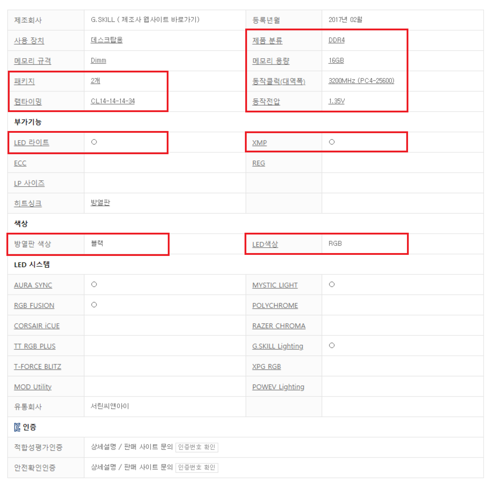

램
RAM(Random Access Memory)은 사용자가 자유롭게 내용을 읽고 쓰고 지울 수 있는 기억장치입니다. '주 기억장치'로 분류되며 보통 램이 많으면 한번에 많은 일을 할 수 있기에 '책상'으로 비유되곤 합니다.
램은 임의의 영역에 접근하여 읽고 쓰기가 가능하며 반도체 회로로 구성되어 있는 '휘발성 메모리'입니다. 또한 우리가 알아볼, 혹은 살 램은 DRAM(Dynamic Random Access Memory)이 정확한 명칭입니다.
우리가 사용하는 램은 크게 2종류로 나눌 수 있습니다. 튜닝램과 일반램 입니다. 튜닝램은 일반 램 중에서도 수율이 좋은 램을 선정하여 오버클럭을 하거나 방열판을 붙이는 등 '튜닝'과정을 거친 램을 의미합니다.
튜닝램 중 하나를 예시로 들어 설명하겠습니다.
G.SKILL DDR4 - 3200 CL14 TRIDENT Z RGB 패키지 (16GB(8GX2))
G.SKILL : 램을 튜닝한 회사의 이름입니다. 각 회사마다 사용하는 램의 회사도 다르고 방열판의 재질 등 여러 차이가 있습니다.
DDR4 : 램은 기술적인 발전을 통하여 세대를 교체하곤 했고, 교체할 때에는 메인보드에 장착되는 규격 또한 바뀌곤 했습니다. 단순하게 성능과 규격을 나타내는 사항이라 볼 수 있습니다.
3200 : 램의 동작 클럭을 의미합니다. 일반적으로 XMP기술이 적용되어 저장된 동작 클럭을 의미합니다. 간혹 25600 등으로 표기된 것이 있는데 이는 동작 대역폭을 의미하며 클럭수 X 8 과 동일합니다.
CL14 : 램 타이밍을 의미합니다. 복잡한 설명 없이 낮을수록 더 높은 성능을 의미합니다.
TRIDENT Z RGB 패키지 : 각 회사별 제품 패키지 이름입니다.
16GB(8GX2) : 판매하는 램 패키지의 용량을 의미합니다. 패키지에 다수의 램이 포함된 경우 어떤 용량의 램이 몇개가 있는지 표기됩니다.

출처 : 다나와 닷컴 G.SKILL튜닝램 제품 상세설명
빨간 사각형 부분을 보겠습니다.
패키지 : 패키지 안에 몇개의 램이 있는지에 대한 설명입니다.
제품 분류 : 어떤 규격을 사용한 램인지에 대한 설명입니다. 메인보드에서 램의 규격을 지원하지 않으면 장착되지 않습니다.
메모리 용량 : 패키지의 메모리 합이 몇 GB인지에 대한 설명입니다.
동작클럭(대역폭) : 램의 클럭 즉, 속도를 의미합니다. 일반적으로 높을수록 더 좋은 성능을 갖고있지만 램 타이밍과 함께 비교해야 정확한 비교가 가능합니다.
동작전압 : 기본(default) 설정된 전압을 의미합니다. BIOS설정에서 변경 할 수 있습니다.
램 타이밍 : 동일 클럭일 경우 낮은 램 타이밍이 더 높은 성능을 의미합니다.
방열판 색상 : 튜닝램의 경우 장착된 방열판의 색을 의미합니다.
LED 색상 : 방열판에 장착된 LED라이트가 어떤 색을 내는지 의미합니다.
램은 반드시 2개 이상의 램을 사용하는 것이 좋습니다. 예를들어, 8GB 램 하나를 사용하는 것 보다 4GB 램 2개를 사용하는 것이 더 높은 성능을 발휘하며 가격도 별로 차이가 나지 않습니다.
4GB : 사무용 컴퓨터로써의 최소한의 용량입니다. 웹서핑, 유튜브, 저사양 게임 등을 이용 할 수 있지만 권장되지 않습니다.
8GB : 어느정도 다수의 프로그램이나 여러개의 웹 창을 이용하여도 큰 부담이 되지 않는 용량입니다. 요즘 나오는 게임의 최소 권장 용량이기도 합니다. UHD 모니터를 사용한다면 권장되지 않습니다. 사무용 컴퓨터에 적합합니다.
16GB : 2020 년 이후 출시된 일부 고사양 게임을 제외하고는 거의 모든 게임에서 램 용량에 구애받지 않는 용량입니다. UHD모니터를 사용한다면 16GB이상의 램을 권장합니다. 또한, 음악 작곡을 위해서는 16GB이상을 권장합니다.
32GB : 4K 60FPS 영상 편집에 요구되는 최소 용량입니다. 16GB에 적합한 게임을 즐기면서도 다양한 프로그램을 사용하려는 분들이 많이 선택하는 용량입니다. 대표적으로 하나의 컴퓨터로 게임 및 방송 송출을 하는 원컴방송이 있습니다.
시티즈 스카이라인, 코이카츠 등 램 용량을 많이 사용하는 프로그램의 권장 사양이기도 합니다.
64GB : 4K 해상도의 영상편집이나 3D 작업시 권장되는 용량입니다. 원컴 방송으로 여러 플랫폼에 동시 송출을 원하는 경우에도 사용합니다.